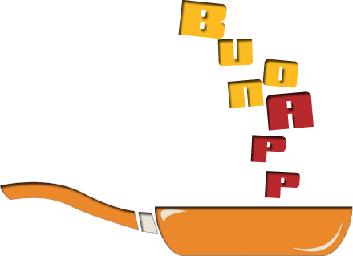

Che si mangia oggi a scuola?

Il menu del giorno della ristorazione scolastica della Città di Torino, per tutte le diete. Si possono salvare due menu preferiti.
I menu provengono dai calendari pubblicati dalla Città di Torino. buonApp non è un servizio ufficiale del Comune: in caso di dubbio vale quanto comunicato dalla scuola.